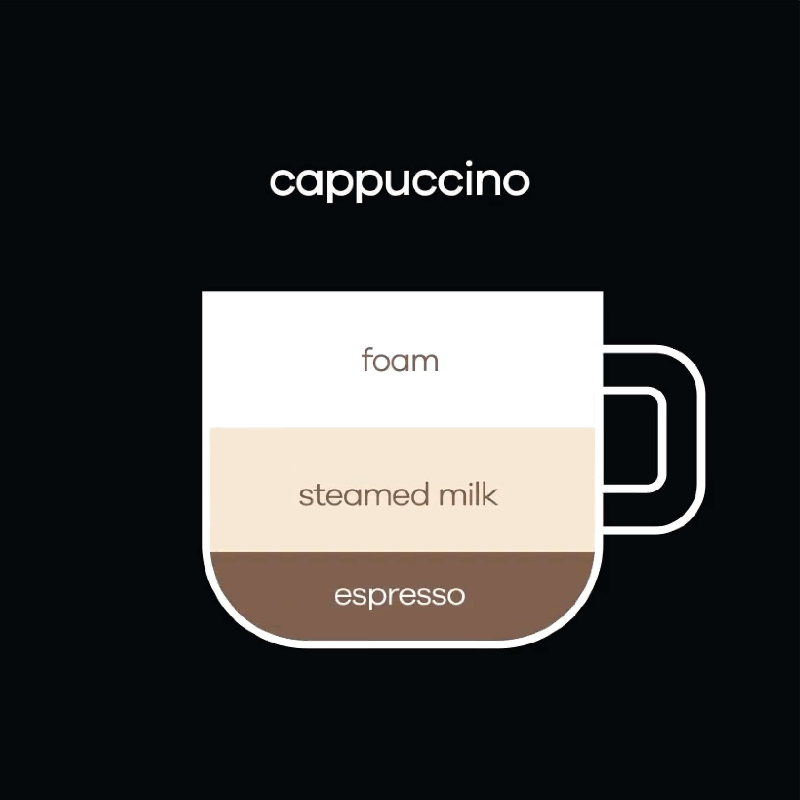

Not to be confused with the Mocha coffee bean that originates in Yemen, the mocha or caffe mocha is a sweet, chocolate-laced coffee that has become a staple on worldwide coffee menus. The drink originated in the USA and take inspiration from a Turin coffee called the Bicern. A homage to the Red Sea coastal town of Mocha, Yemen, which has been exporting coffee since the fifteenth century. Coffee imported from the region was said to have a a rich chocolatey taste, hence the term 'mocha' being used to describe the addition of chocolate to this cappuccino hybrid. Very much like a cappuccino, the mocha contains a frothed milk that is often - but not always - topped with whipped cream. Made up of one third epsresso and two thirds steamed milk with cocoa powder added, it's no wonder that those with a sweet tooth opt for this luxurious choco-coffee drink. Relatively simple to make, the mocha is a great option for those that want a fusion between a luxurious hot chocolate and a normal latte/cappuccino and can't quite decide what to choose. There are a couple of ways to prepare a mocha, so a little bit of practice can be a valuable tool with this decadent milky coffee drink.
